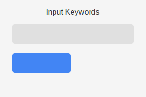
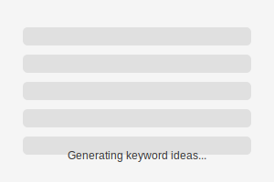
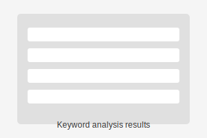
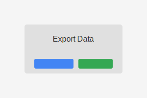
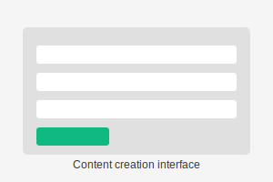
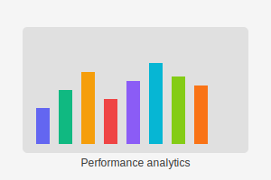

Automation of keyword research processes to create more effective content
Learn MoreDiscover relevant keywords for my content using Google Ads API data.
Analyze search volumes and competition to optimize my content strategy.
Export results in multiple formats for my content planning and analysis.
My data and research stay completely private and secure.
Enter a topic or keyword for my content research.
Connect to Google Ads API to discover related keywords.
Review search volumes, competition, and other metrics.
Export data and use insights to plan your content strategy.
Develop high-quality content for websites and YouTube using keyword insights.
Publish content and track performance to refine future keyword research.
This tool is developed for personal use to improve my content creation process for websites and YouTube channels. By leveraging the Google Ads API, I can make data-driven decisions about which topics to create content for.
The Keyword Research Tool helps me identify profitable niches and optimize my content for search engines, resulting in better visibility and engagement.
This is a private tool used only by me and is not available for public use or as a service to third parties.
Usage summary / Resumen de uso: This internal tool is designed to identify high-potential keywords using data from the Google Ads API. It helps us make informed editorial decisions for our own websites and YouTube channels. This system is not public and is not offered as a service to clients or third parties.
Versión en español: Esta herramienta es de uso interno y está diseñada para identificar palabras clave de alto potencial usando datos de la Google Ads API. No se ofrece como servicio a terceros.
For any inquiries about this project, please reach out via email:
jdgestiondigital@gmail.com